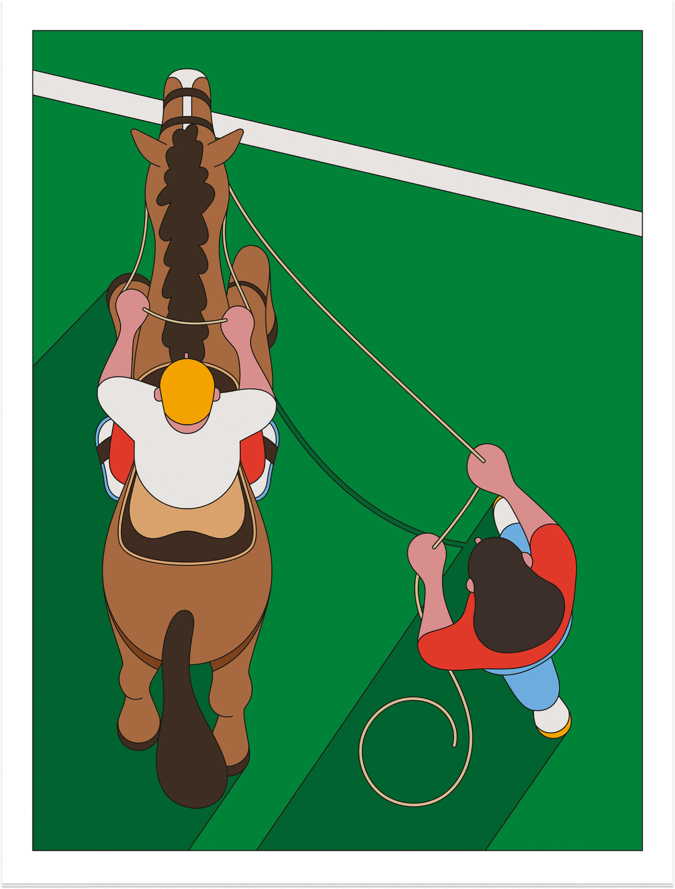
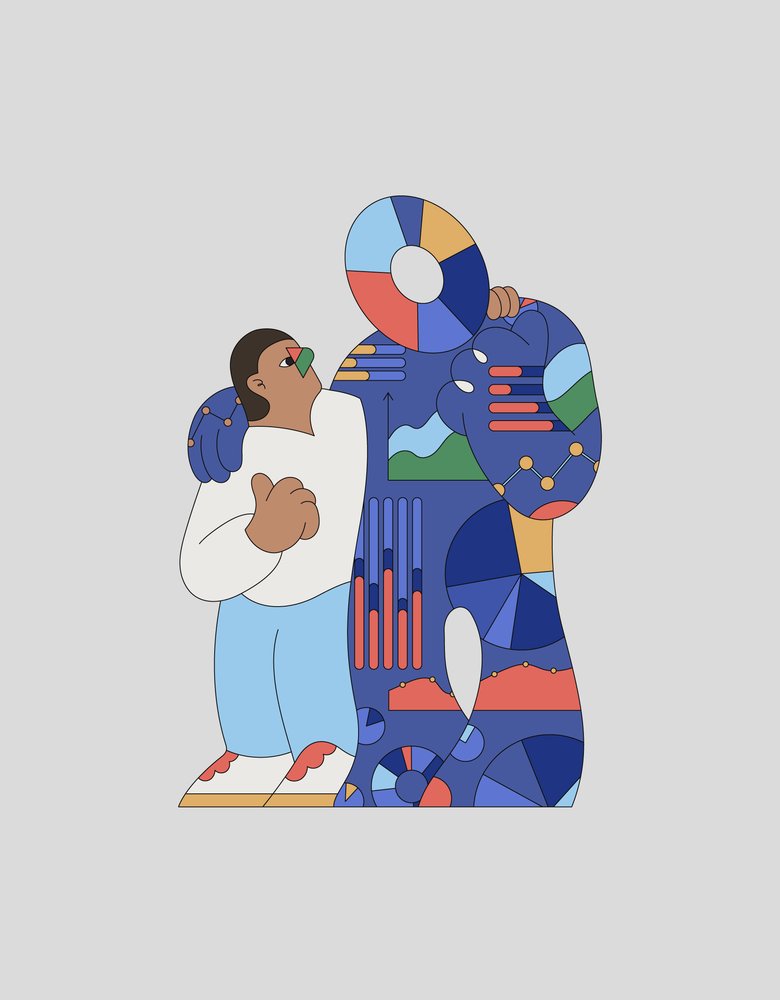
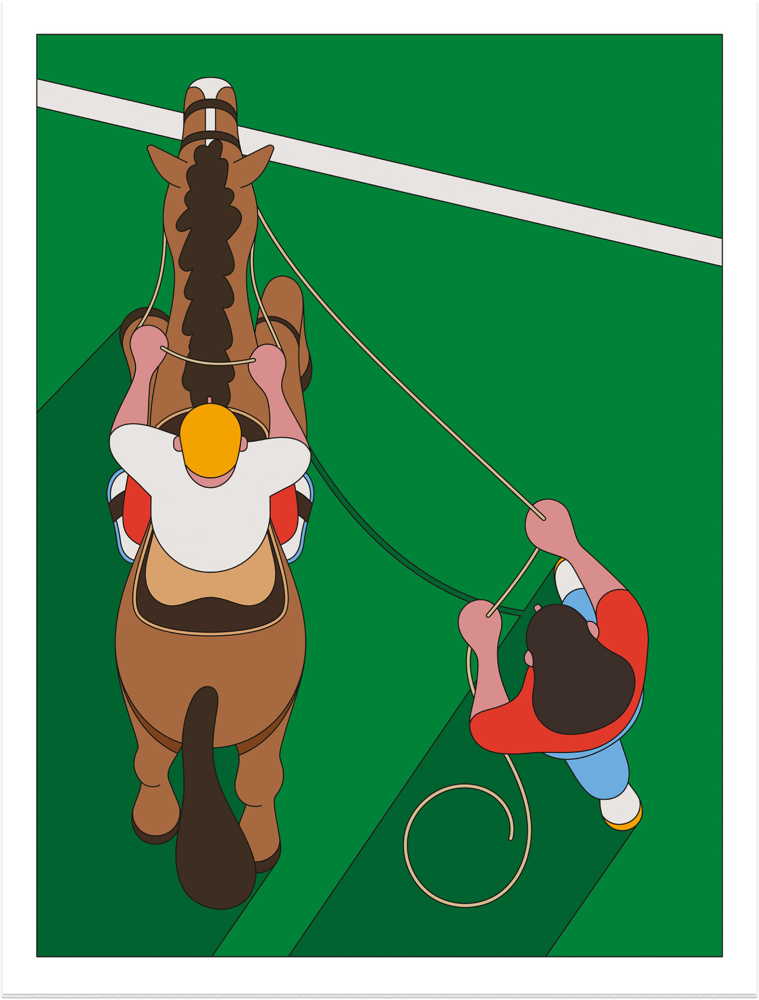
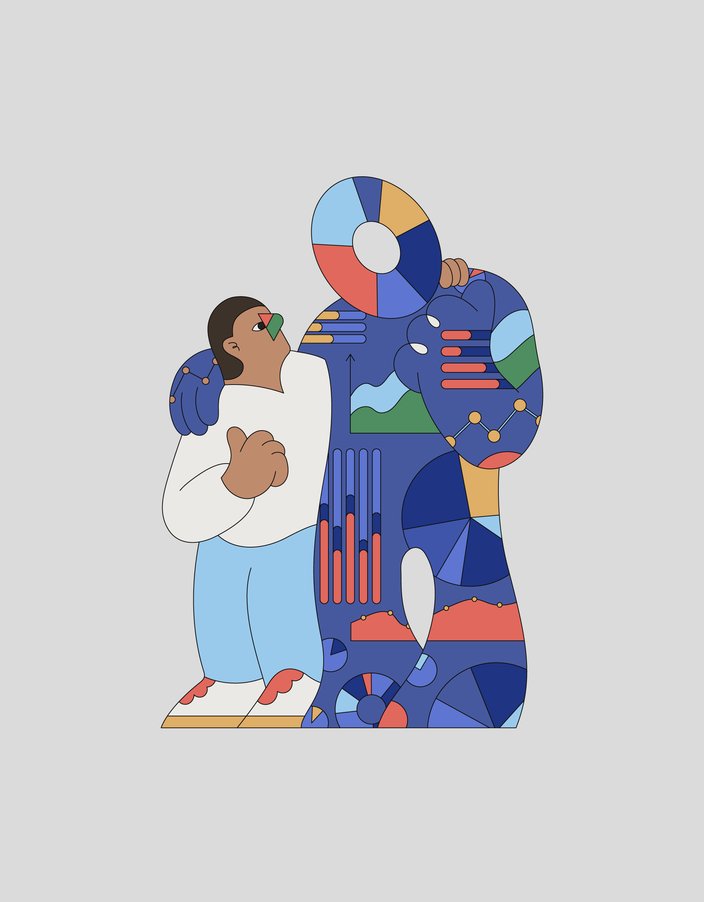

Camilo Huinca
Il lavoro di Camilo Huinca è ricco di colori, contenuti e una narrazione brillantemente illustrata che parla da sé. Nato e cresciuto a Santiago del Cile, Camilo ha diviso la sua carriera tra graphic design e pittura.
Lavorare in modo indipendente ha permesso a Camilo di "sviluppare il (suo) stile, concentrandosi principalmente sull'uso della curiosità", spiega.
Nel 2014 Camilo ha fondato Perfe Studio dove si concentra su progetti di design grafico in "un modo più commerciale". Tuttavia, all'interno dell'illustrazione, ha descritto la sua motivazione principale come "essere in grado di generare un metodo di comunicazione basato sulla semplicità e sulla sintesi, con pochi strumenti e colori".
Camilo è affascinato dalle scene quotidiane, dai momenti e dalle abitudini personali, spesso ritraendo percorsi panoramici di autobus, gallerie d'arte e personaggi pubblici nel suo stile psichedelico. "Nel mio lavoro cerco di riprodurre momenti reali da una prospettiva innocente e imparziale."
Vedi portfolio

 


